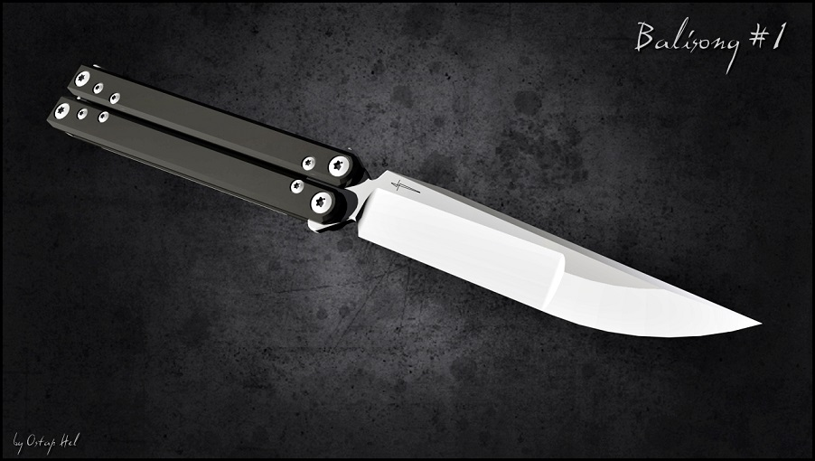

The Art of the Balisong
The balisong, or butterfly knife, is a traditional folding knife from the Philippines. This website explores its history, design, and modern culture.
About This Website
This site introduces the story and structure of the balisong in three simple sections:
- Section 1 – History and Origin: Describes where the balisong came from and how it became part of Filipino culture.
- Section 2 – Design and Mechanics: Explains how the knife works, its unique handle system, and how trainers are made for safe flipping.
- Section 3 – Modern Culture: Shows how balisong flipping has grown into a global hobby, with videos, tutorials, and online communities.
Use the navigation bar above to explore each section. This website was created by Allen Yuan as part of GEOG 328 Lab 2 to practice HTML, CSS, and JavaScript for responsive web design.